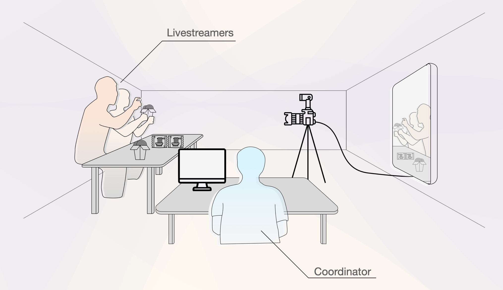
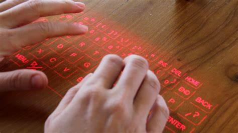
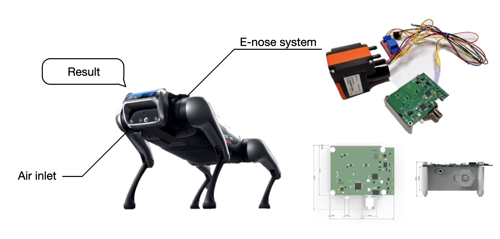

Yuehan Qiao
乔玥涵
PhD Student
College of Information, University of Maryland, College Park
I'm currently a PhD student in INFO school in University of Maryland, advised by Dr. Hernisa Kacorri. My research interests fall in the intersection of human-computer interaction, human-centered AI, and accessbility. My research goal is to address real-world problem by building technology to benefit people with disabilities.
I have an interdisciplinary background, including working and education experience in engineering and design. I did a long-term internship at Apple as Product Design Engineer. I earned my bachelor degree of Electronic Engineering (EE) and Master of Arts in Information Arts & Design at Tsinghua University. Outside work, I love tennis and landscape photography.
I'm now looking for summer internship opportunities, welcome to connect me through
Linkedin
!
Research

Virtual Co-presenter for DHH Livestreamers in E-commerce Livestreaming
- Identified the challenges in information conveying, emotion expression and viewers' watching intention in Deaf and Hard-of-Hearing (DHH) e-commerce livestreaming by conducting semi-structured livestreamers and 15 hearing viewers and analyzing in thematic analysis.interviews with 4 DHH
- Collaborated with designers on devise and implement a 3D cartoon virtual human assistant system with accentuated information broadcast and emotionally enhanced animations using Blender and Unity.
- Designed the comparison experiments to evaluate the system's impact on user experience through semi-structured interviews and quantitative scale.
 Poster
Poster
![A teaser image showing the process of the study in four sections from left to right. The first section to the left is a photo taken during the study, where four middle school students and a mentor sitting around a table, creating storyboard on a big paper with one of them using laptop to facilitate. The second section in a form of scatch shows the group of students are running out of ideas and staring at the big paper. The third section in a form of scatch shows the group get together in front of a laptop to interact with LLM tool. The last section to the right shows that the group get creative inspiration and come up with idea after discussion based on the responses from LLM.](assets/images/LLM.png)
Leverage LLMs to Support Project-Based Learning (PBL) in Middle School Classroom
- Discovered LLMs can boost PBL and surveyed students' varied trust and complex perspectives on LLMs' impact to their creativity through two 48-hour LLM-involved PBL instructional programs for middle school students.
- Designed and implemented the PBL course and experiments with teaching team. Trained 10+ teaching assistants and providing supports throughout the instructional process.
- Designed and implemented the PBL course and experiments with teaching team. Trained 10+ teaching assistants and providing supports throughout the instructional process.
- Conducted semi-structured interviews with 30+ students and 7 teaching assistants with two other members. Analyzed data by applying inductive thematic analysis approach.

Optimization of Typing Experience for Zero-travel Keyboard
- Created a patent-pending zero-travel keyboard with integrated sensing and vibration feedback using piezoelectric ceramics, which dramatically improves the typing experience.
- Discovered the usefulness of piezoelectric ceramic sensing and vibration function by embedded programming on an STM32-based development board.
- Developed software for parameter control and display by using PyQt5.
- Led my team to measure micro-vibration acceleration, trigger momentum and noise levels, and conducted a user study involving 24 participants to determine preferred typing experience parameters.

Olfactory Perception and Recognition of Robotic Dog
- Launched a robotic dog with olfactory perception for commercial use by using a novel electronic nose composed of 19 MEMS gas sensors.
- Contributed to the embedded development of the electronic nose and the development of visualization software for data collection.
- Responsible for data collection and processing. Delivered a stable classification models within 3s odor sampling time independently, reaching 96% accuracy on practical tests in home environments.
Publications
Check all my publications on my
Google Scholar Profile
. My name is bolded in the following list:
- Siyu Zha, Yuehan Qiao, Qingyu Hu, Zhongsheng Li, Jiangtao Gong, and Yingqing Xu. 2025. Designing child-centric AI learning environments: Insights from an LLM-powered creative project-based learning study. International Journal of Human-Computer Studies 204: 103602.
- Yuehan Qiao, Zhihao Yao, Meiyu Hu, and Qianyao Xu. 2025. Virtual Co-presenter: Connecting Deaf and Hard-of-hearing Livestreamers and Hearing audience in E-commerce Livestreaming. In Proceedings of In Extended Abstracts of the CHI Conference on Human Factors in Computing Systems (CHI EA '25).
- Yuehan Qiao. 2024. Design and Research of Virtual Human Assistive Tool for Deaf and Hard-of-hearing E-commerce Live-streaming. Master's Thesis, Academy of Arts & Design, Tsinghua University. (in Chinese)
- Zhihao Yao, Yuehan Qiao, Qianyao Xu. 2023. Research on Virtual Human Design in Smart Home. Journal of Computer-Aided Design & Computer Graphics, 35(2): 221-229. (in Chinese)
- Yunbing Chen, Ke Shen, Gang Yu, Yuehan Qiao, Xiangning Yan, Wuwei Zhang, and Yingqing Xu. 2022. EEG-Based Artistic Visualization of Dreams. In Proceedings of the Ninth International Symposium of Chinese CHI (Chinese CHI '21).
Contact me
Feel free to reach out at any time!
Email: yhqiao@umd.edu
You can also connect me on linkedin !